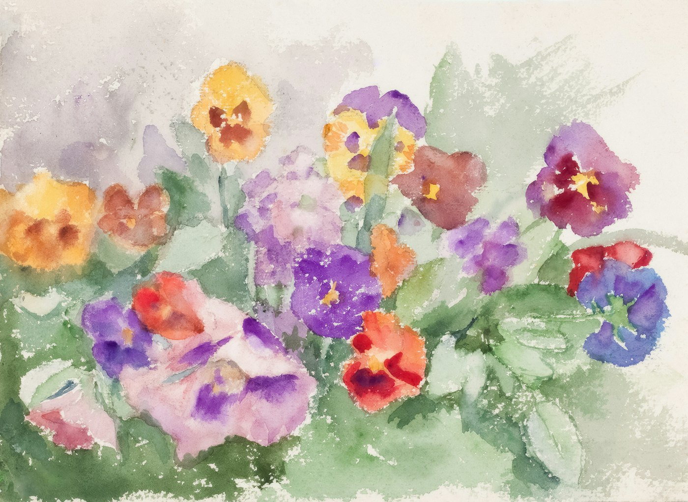
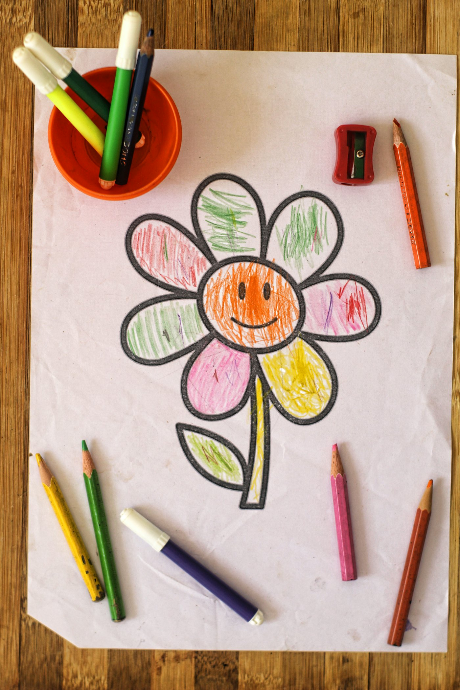
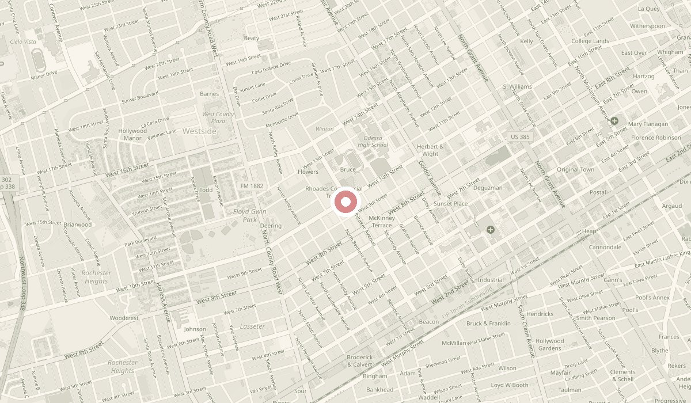

Genesis Little Blessings is a licensed child care center on W 10th St in Odessa, caring for infants through school age, weekdays 7:00 AM to 6:00 PM.
★ 4.3 from 16 public reviews
Programs listed on the center's Texas HHSC license. Swipe to see more.
Provided each day.
To and from school.
Adventures beyond the classroom.
A soft landing after the bell.
Care that bends with your week.
Child care subsidies welcome.

From infants to school-age kids, siblings can grow up in the same place. Director Elena Frien leads the center.
State license record · Stock photos via Unsplash, not the center's own.
1205 W 10th St, Odessa, TX 79763

Map data © OpenStreetMap contributors · tap for directions